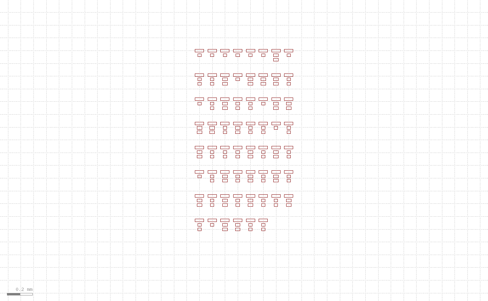
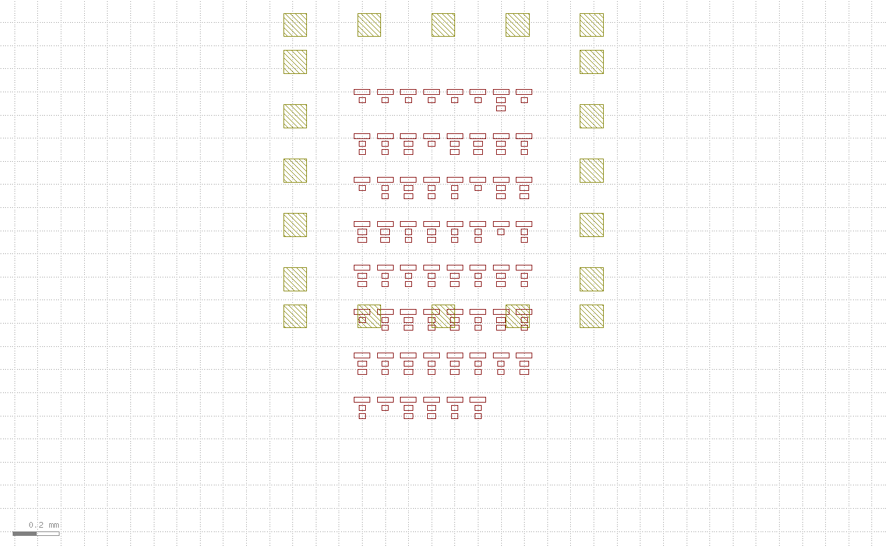
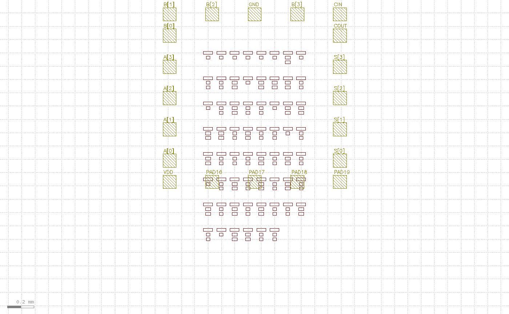
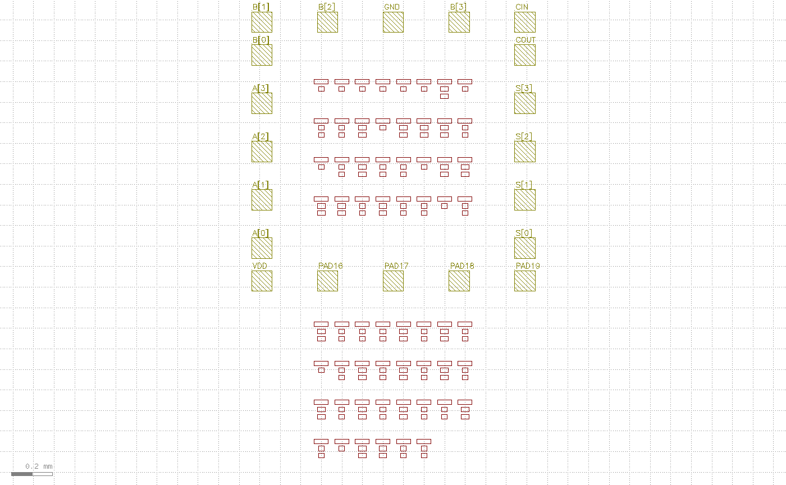
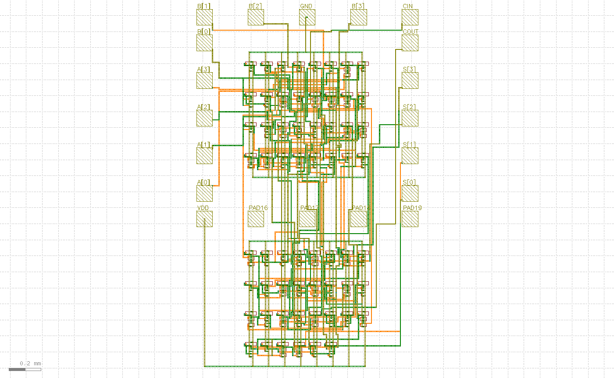
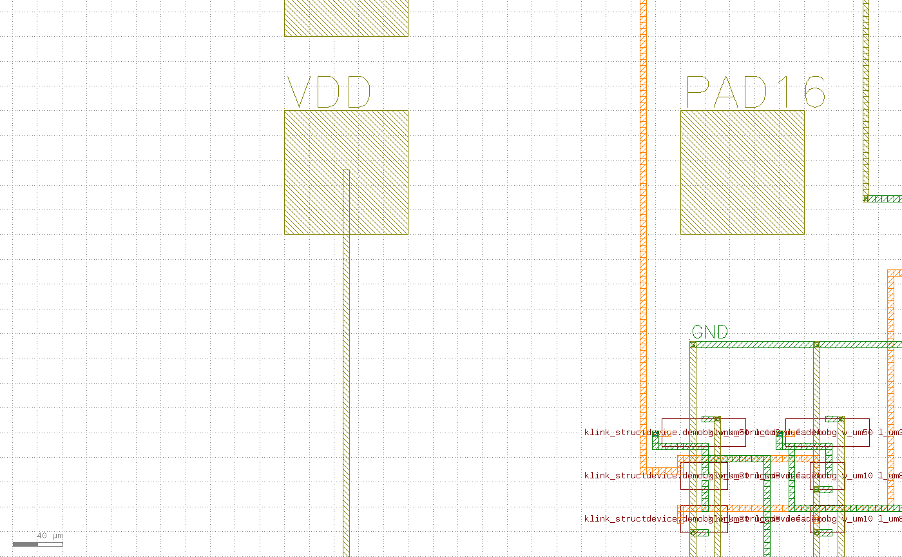
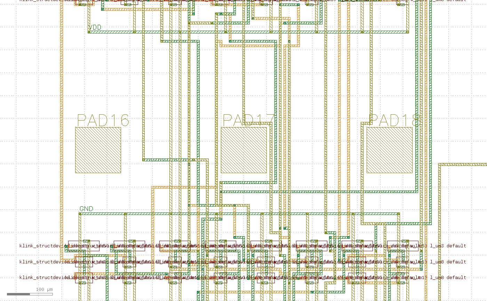
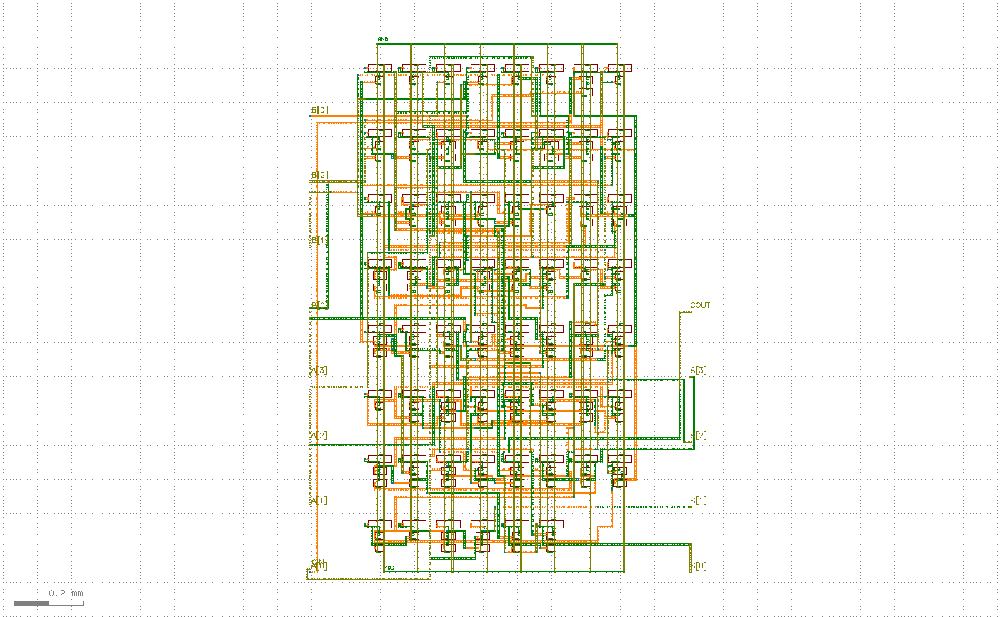
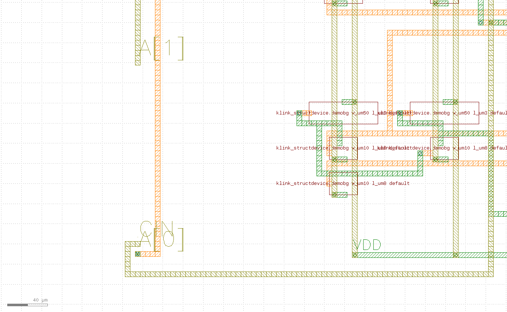

前置条件
- 安装 klink：
pip install klayout-klink（一条命令装好 klink 和它的 Rust 内核）。 - KLayout 正在运行，并已加载 klink 插件。
- 这个 demo 是 starter：
klink init <proj>脚手架里就有（example_template/digital/padframe_pnr_lvs.py），需要一个运行中的 KLayout 会话。完整命令是：python example_template/digital/padframe_pnr_lvs.py --port <会话端口> # 有卡模式 python example_template/digital/padframe_pnr_lvs.py --port <会话端口> --no-card # 无卡模式 # 仓库克隆里也可以: python -m examples_klink.public.demos.digital.padframe_pnr_lvs --port <会话端口> [--no-card]
padframe_pnr_lvs.py 内部一次性完成的构建拆成 6 个可观察阶段，方便讲清"卡先存在、电路后迁就"这条反序流每一步在做什么。生产环境里你还是直接跑那一个脚本——分阶段只是教学手段。它复用 拟合器件 demo 的公开 3 层工艺与合成拟合器件库，所以本身零器件几何；电路是一个开源逻辑综合器网出来、再映射到这些合成器件上的 4-bit 加法器（173 器件 / 96 net / 62 gate）。1合成电路基底：lint + 层数顾问 + 平铺摆放
先 lint 器件 netlist——在任何几何存在之前，就把手写 netlist 的结构错误（未知实例、终端接到两个 net、实例不在任何组里……）连同修复建议一起报出来。lint 通过后，层数顾问把每个候选层栈的代价摊开：层数越少越好（每多一层都是真实的一道沉积 / 光刻 / 通孔工序），选择权在你。add4 在公开 3 层栈上就能舒服布通，所以我们用它。
| 候选层栈 | 路由层数 | 信号层 | core 尺寸 |
|---|---|---|---|
public-3L | 3 | 2V + 1H | 920 × 1208 µm = 1.111 mm² |
example-7L | 7 | 2V + 2H | 920 × 984 µm = 0.905 mm² |
顾问只报算术，候选层栈本身是示例数据（你的 fab 实际能造什么）。这一步的截图里，器件块先按无带约束平铺（8×8 网格，行距 190 µm），用来量出 block 占位、给后面的卡定位/定尺寸：
rep = lint_netlist(nl, device_terms=terms) # 结构 lint，错误即修复指令
assert rep["ok"]
adv = layer_demand_report(nl, terms, [("public-3L", D.PUBLIC_PROCESS),
("example-7L", PUBLIC_MULTILAYER)])
rows, cols = derive_grid(len(nl["groups"])) # 8 x 8
flat = eng.place_grid(nl, rows, cols, profile=P, row_pitch=rp) # 无带平铺
place_grid，8×8 网格）。这是量 block 占位、给卡定位的基准，此时还没有卡、没有布线。2用户的针卡：造替身 → pads_from_gds harvest 回来
这是反序的核心：卡先存在。为了让 demo 自包含，我们先写一个替身针卡 GDS（106/0 层上 20 个 pad 方块排成一圈，就当它是从抽屉里翻出来的旧卡），然后用 pads_from_gds 把它 harvest 回来。真实场景里你跳过 fabricate 这一步，直接 harvest 你自己的卡文件：
from klink.routing.grid.pad_harvest import pads_from_gds
# 真实流程从这一行直接开始：pads_from_gds(你的卡文件, 你的cell, 你的层)
pads = pads_from_gds(CARD, "PROBE_CARD_20", "106/0", min_size_um=50.0)
# -> [{"id": "PAD00", "box_um": [...]}, ...] 共 20 个 pad卡的几何是示例数据：pad 100×100 µm，环内部够宽能容下 block，但高度只有 block 的一半——这正是后面第 ④ 步"一半卡内 / 一半卡下"的由来。harvest 出来的就是一张普通 pad 表 [{"id", "box_um"}, ...]，net 分配是之后人/agent 在它上面做的决定。

106/0 层），左右各 5 个 + 上下各 5 个。环内部装不下整块器件的全高——注意底部 pad 行会横穿 block 下半部。3net → pad 分配表
在 harvest 出来的 pad 上叠一张纯表格：哪个 net 走哪个 pad。本例约定（你可自由改）：输入走左列 + 顶行，输出走右列，GND 在顶行（它的 tie rail 在 block 上方派生），VDD 在左下角 pad（沿左边留一条干净走廊到 block 下方的 rail）。20 个 pad 里用掉 16 个（全部 14 个主端口 + VDD + GND），剩 4 个冗余 pad 保持未用——这在任何旧卡上都很正常。
def near(x, y): # 离某个卡上点最近的 harvest pad
return min(pads, key=lambda p: (p["box_um"][0] - x) ** 2 + (p["box_um"][1] - y) ** 2)
for cy, net in zip(side_y, ["A[0]", "A[1]", "A[2]", "A[3]", "B[0]"]):
near(ring_x1, cy)["net"] = net # 左列：5 个输入
for cy, net in zip(side_y, ["S[0]", "S[1]", "S[2]", "S[3]", "COUT"]):
near(ring_x2 - PS, cy)["net"] = net # 右列：5 个输出
for cx, net in zip(row_x, ["B[1]", "B[2]", "GND", "B[3]", "CIN"]):
near(cx, ring_y2 - PS)["net"] = net # 顶行：输入 + GND
near(row_x[0], ring_y1)["net"] = "VDD" # 左下角：VDD
PAD16..PAD19 保留原始 id，表示它们是冗余、未分配 net 的 pad。4一半卡内 / 一半卡下的摆放
卡的底部 pad 行横穿器件块。因为卡是固定的、能屈能伸的是 block——所以我们把那条水平带禁掉：place_grid(forbid_y_bands=[band]) 会把任何会撞到这条带的器件行推到带下面去。前 inner_rows 行留在环内，其余继续排在环下，布线在底部 pad 之间穿过。这样一整块器件就"一半在 pad 环内 / 一半在环外"地被劈开，不需要任何新的摆放引擎。
band = (ring_y1 - CLR, ring_y1 + PS + CLR) # 底部 pad 行 + 间隙
placement = eng.place_grid(nl, rows, cols, profile=P, row_pitch=rp,
forbid_y_bands=[band]) # 撞带的行被推到带下方
# 实测：85 个器件在环内，80 个在环下
forbid_y_bands 把底部 pad 行占的水平带禁掉：85 个器件留在环内、80 个被推到环下（对比 Step 3，下半部整体下移，让开了底部 pad 行）。卡不动，是 block 让路。5信号 P&R + 分区电网，然后成品
最后一次调用 route_and_draw_flexdr 同时干三件事：信号布线（faithful FlexDR，在 track grid 上避开电网）、画器件 PCell + 走线 + 通孔、以及把 io_pads 里已分配的 pad 变成该 net 自己的固定金属 + 额外布线终端（未用 pad 变成硬避障）。同一条禁带还会劈开电网：pdn_split_bands 每个区域造一张 PDN，再用一条 spine strap 穿过底部 pad 行最宽的无 pad 缝隙把两区桥接——电源像信号一样在卡的 pad 之间穿线。
with KLinkClient(port=PORT).connect() as c:
ok, info, _ = eng.route_and_draw_flexdr(
c, "PUB_PADFRAME_ADD4", nl, placement, profile=P, layers=layers,
vias=P.via_rules(), cut_layer=cut_layer, geom_path=D.GEOM, devices=DEVICES,
use_rust=True, io_pads=IO, pdn_split_bands=[band])
# -> routed 94/94, markers 0, 4.1s
view.zoom_fit）：routed 94/94 · markers 0。上下两半器件块都布通，信号连到四周已分配的 pad；VDD 从左下角 pad 沿左边走廊接到下方电网，GND 顶行 rail 在上方。
VDD pad 沿自己中心一条竖直 strap 走廊下到电网 tie rail——power pad 需要一条干净的竖直车道到它 net 的 rail，没有的话 route_and_draw_flexdr 会报一条指明冲突的错误。
PAD16..18）之间的无 pad 缝隙穿过，把环内 PDN 和环下 PDN 桥接起来——电源和信号一样在卡的 pad 之间穿线。6无卡模式：每个端口引成裸线头
加 --no-card：完全没有 pad，也不画任何 pad。每个端口作为一条裸标注线端离开 block——spread_ports 造出线端目标（draw=False：不画盒子，走线自己的金属在那里结束，带上 net 名文字）。输入吸在西边、输出吸在东边，都吸附到器件行之间的路由通道中心（避免线端落在器件行带里逼着水平段挤进邻道）。电源根本不需要线头：PDN tie rail 已被引擎自动标注为 VDD/GND，在 rail 上任意处 bond/probe 即可。
from klink.routing.grid.pad_harvest import spread_ports
IO2 = {"pad_layer": "106/0", "text_size_um": 15.0,
"pads": (spread_ports(BB, INPUTS, side="W", size_um=P.wire_width_um,
clear_um=120.0, prefix="IN", snap=chan) # 输入在西
+ spread_ports(BB, OUTPUTS, side="E", size_um=P.wire_width_um,
clear_um=120.0, prefix="OUT", snap=chan))} # 输出在东
ok2, info2, _ = eng.route_and_draw_flexdr(
c, "PUB_PADFRAME_ADD4_NOCARD", nl, flat, profile=P, layers=layers, ...,
io_pads=IO2, pdn_split_bands=None) # -> routed 94/94, markers 0, 3.6s
--no-card 成品：routed 94/94 · markers 0。没有 pad 环——输入（A[*]/B[*]/CIN）在西边、输出（S[*]/COUT）在东边，全是裸标注线端；电源在自动标注的 PDN tie rail 上。
A[1]、CIN 等 net 名标在走线末端——线端就是端口，没有画任何 pad 盒子（draw=False）。这些标签告诉你之后自己的 pad 该接哪里。验证：两种模式各自的 live LVS
和别的教程一样，截图只是给人看的，不是完成依据。这个 demo 的完成门槛是两种模式各自 live LVS match=True，外加一条正向逐 pad 证明：每个已分配 pad/线头的金属必须和它 net 的器件终端落在同一条抽取网络上；每个未用 pad 必须不碰任何 net。本次实跑（8767 会话，Rust 内核）的真实数字：
| 模式 | routed | DRC markers | LVS ok | LVS match | 器件 | 逐 pad 证明 | 用时 |
|---|---|---|---|---|---|---|---|
| card（有卡） | 94/94 | 0 | True | True | 173 | 16 connected + 4 隔离 | 4.1s |
--no-card | 94/94 | 0 | True | True | 173 | 14 connected + 0 隔离 | 3.6s |
# card 模式
[PUB_PADFRAME_ADD4] LVS ok=True match=True devices=173
[PUB_PADFRAME_ADD4] pad proof ok=True connected=16 isolated=4
# --no-card 模式
[PUB_PADFRAME_ADD4_NOCARD] LVS ok=True match=True devices=173
[PUB_PADFRAME_ADD4_NOCARD] stub proof ok=True connected=14 isolated=0两种模式的 match 都是 True、DRC markers 都是 0、逐 pad/线头证明全过——这才是"padframe 做完了"的依据。有卡模式 16 个 pad 全 CONNECTED、4 个冗余 pad 全隔离；无卡模式 14 个裸线头全 CONNECTED（电源不占线头，直接在 PDN rail 上）。
下一步
把 padframe_pnr_lvs.py 复制一份，改里面的pad 表（pad 尺寸、位置、net→pad 约定）就是你自己的卡；改 PUBLIC_PROCESS / PUBLIC_MULTILAYER 就是你自己的层栈——流程不变，klink 只出机制。想先搞清楚器件本身怎么从示例几何拟合成参数化 PCell、再进 P&R，看同批的分步教程：拟合器件 → P&R → LVS。更多公开 demo 的实测数字见公开 demo 记录 · Probe-card padframe。